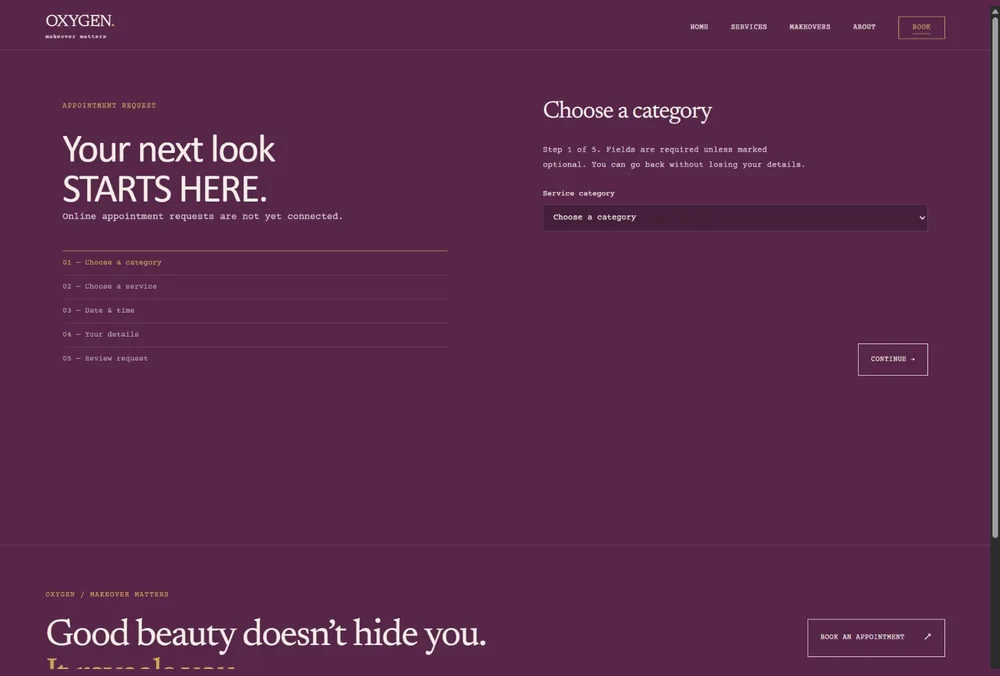

Case study
Oxygen Salon
I carried the chosen service into the appointment form so visitors who book from a service page can go straight to date and time.

The goal
Give visitors a sense of the salon’s style before asking them to choose a service. The same site needed to work as a practical guide to hair, nails, skin, and makeup.
The approach
I kept the category-first path for visitors who open booking directly. On service pages, the booking link fills in the category and service for them.
What to expect
Visitors can review their choices in the published prototype. Online appointment requests are awaiting a connection, and the makeover gallery uses reference imagery.
The interface in use
- Browse the services index and open a category such as Hair or Nails.
- Choose Book this service to carry that choice into the appointment form.
- Pick a date and time, enter contact details, and review the request.


Next case study